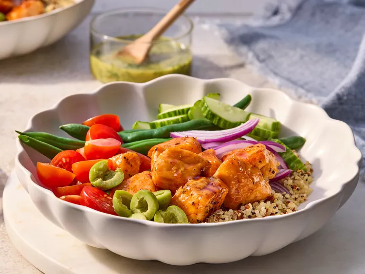

Home
Hot Honey Salmon Bowls

Description
These hot honey salmon bowls feature spicy honey-glazed sauteed salmon,
served over tri-color quinoa with fresh vegetables, and drizzled with a
honey mustard dressing.
Ingredients
- 1 cup water
- 1/2 cup tri-color quinoa or rice
- 1/4 cup honey
- 1 teaspoon smoked paprika
- 1/4 teaspoon garlic powder
- 1/4 teaspoon onion powder
- 1/4 teaspoon cayenne pepper
- 6 ounces fresh green beans, trimmed
- 2 tablespoons olive oil
- 2 (4 ounce) skinless salmon fillets, cut into 1 1/2-inch chunks
- 1/4 teaspoon salt
- 1/2 English cucumber, sliced
- 1/2 cup halved cherry tomatoes
- 1/4 cup sliced red onion (optional)
- 1/4 cup pitted Castelvetrano olives, sliced (optional)
Mustard Dressing
- 2 tablespoons olive oil
- 2 tablespoons white wine vinegar
- 1 tablespoon Dijon mustard
- 1 tablespoon chopped fresh parsley
- 1 tablespoon chopped fresh dill
- 1 teaspoon honey
- 1/4 teaspoon freshly cracked black pepper
- 1/8 teaspoon salt
Steps
- Gather all ingredients.
-
Bring water and quinoa to a boil in a saucepan. Reduce heat to
medium-low, cover, and simmer until quinoa is tender, 15 to 20 minutes;
drain any excess water and set aside.
-
Whisk honey, paprika, garlic powder, onion powder, cayenne, and 2
tablespoons water together in a small bowl; set aside.
-
Meanwhile, fill a large skillet with 1 inch of water. Bring to a simmer
over medium heat. Add green beans. Cook, covered, until beans are just
tender, 2 to 3 minutes. Drain; set aside.
-
Wipe out skillet; heat olive oil in the same skillet over medium heat.
Season salmon pieces with salt. Add salmon to skillet; cook until fish
flakes easily with a fork, about 4 minutes, turning after 2 minutes.
Remove salmon from skillet, set aside.
-
Add honey mixture to skillet. Cook and stir until mixture is bubbly and
slightly thickened; about 2 minutes. Remove skillet from heat. Return
cooked salmon to skillet. Toss to coat in honey sauce; set aside.
-
For mustard dressing, whisk together olive oil, vinegar, Dijon mustard,
parsley, dill, honey, pepper and salt, in a small bowl.
-
To serve, divide quinoa evenly between 2 bowls. Top with
hot-honey-sauced salmon, green beans, cucumber, tomatoes, and red onions
and/or olives. Serve with with mustard dressing.